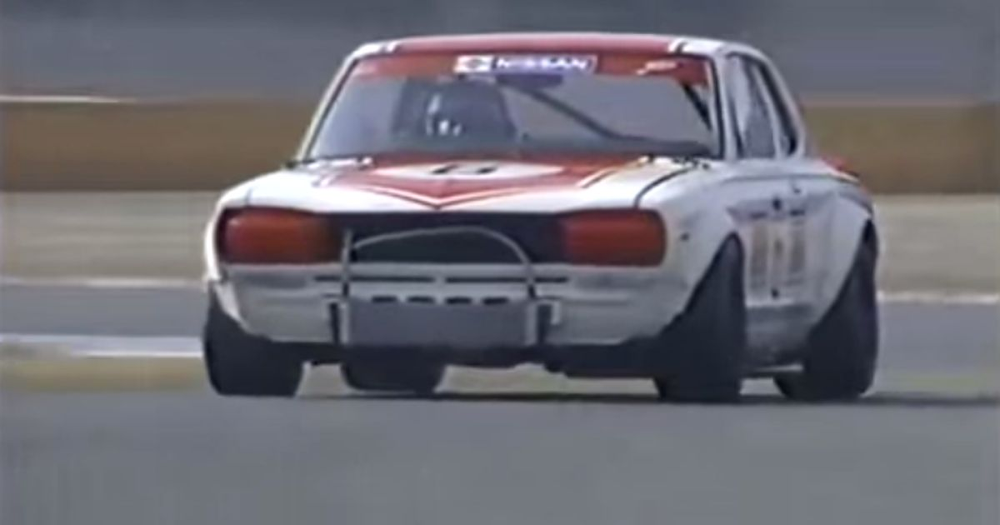
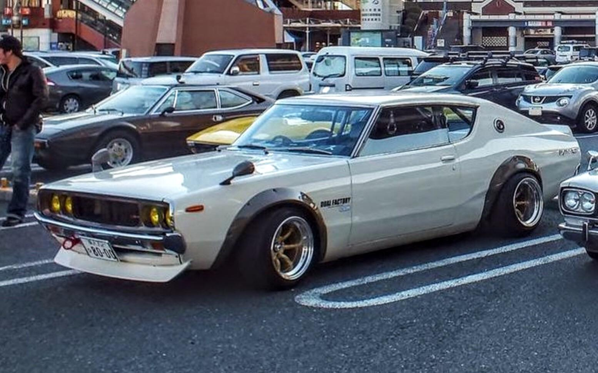
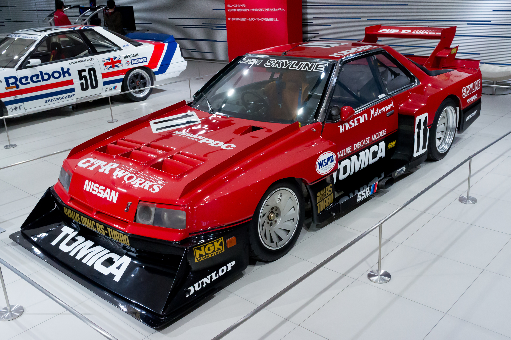
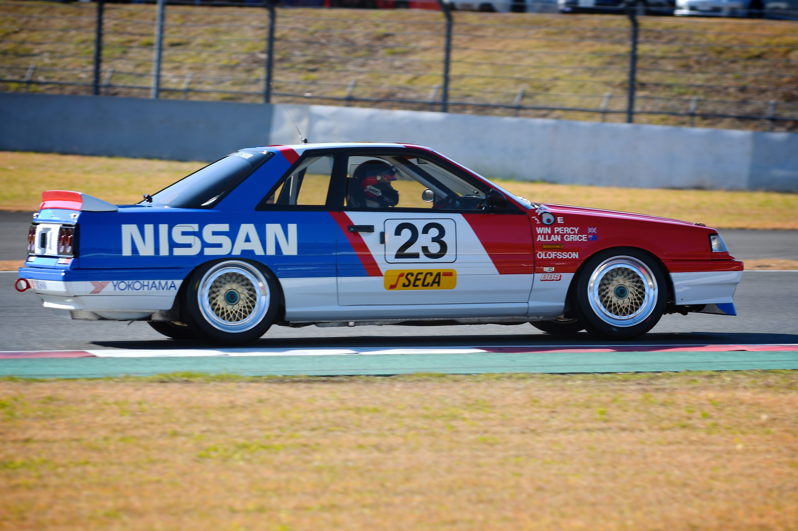
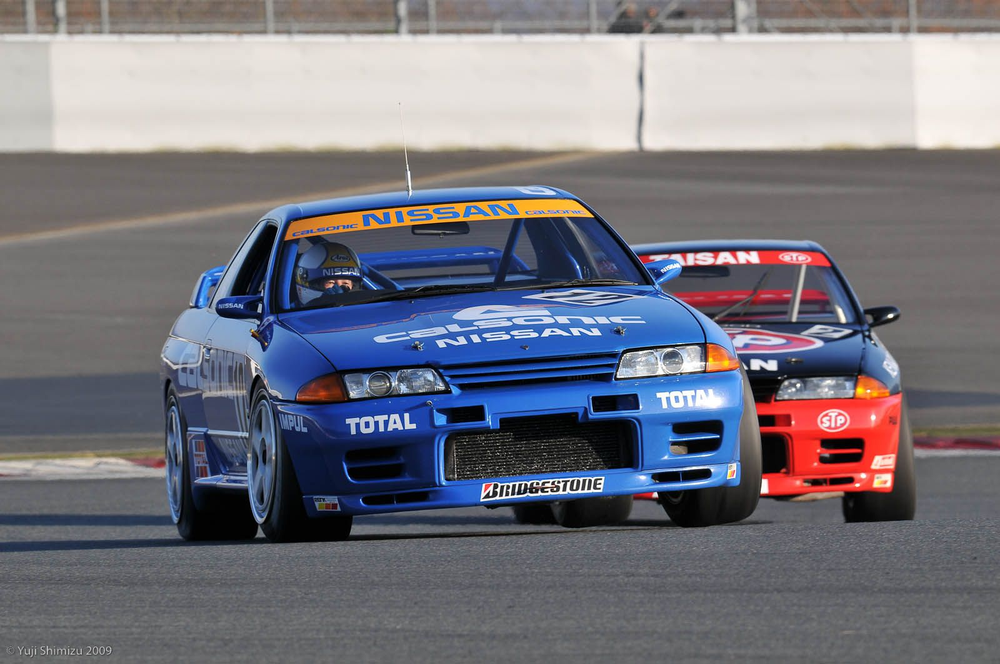
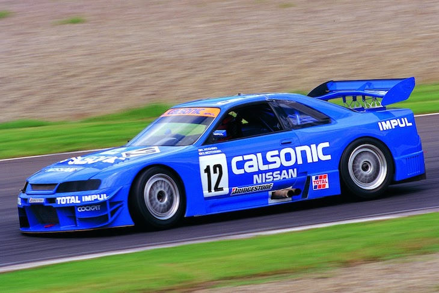
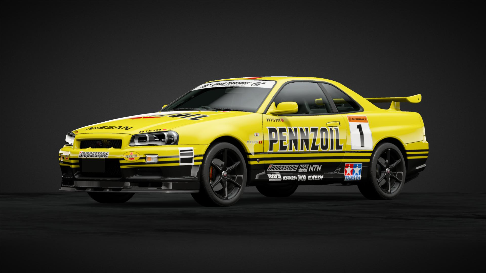

1969-1971

Vanaf 1969 tot 1971 was de hakosuka de meest dominante van zijn klasse met wel 52 overwinningen in de drie jaar waarvan er 49
achter elkaar waren, met als tegenstanders auto's vanuit europa en andere rivalen uit japan.
1973

De kenmeri[c110] zou gebruikt worden voor het volgende touring car seizoen, maar kon nooit gebruikt worden voor dat seizoen omwege de reden dat de
oliecrisis begon. Nissan moest daarom de productie van de auto stilleggen en werd ook nooit meer gemakkt.
1982-1983

De nissan skyline R30 nam deel aan de super silhouette races in 1982. Hij werd bestuurd door Hasemi Masahiro, hij winde in 2 keer in 1982 en 5 keer in 1983.
1989

De SkylineR31 nam deel aan de groep A van de touring car series. De skyline won drie races om kampioen te worden.
1989-1993

De GT-R32 was bij verre de beste raceauto die nissan ooit heeft gemaakt. Van de 29 starts die de auto had heeft hij alle 29 gewonnen en nam vijf keer de trofee mee naar huis van de groep a touring car.
1995

Helaas was de GT-R33 niet zo succesvol op het circuit de auto werd overschaduwd door nieuwere auto's en supercars hierbij stopte het monsterlijk onverslaanbare nissan met winnen.
1999

Net zoals de GT-R33 was het bij de Gt-R34 hetzlefde geval de skyline kon de nieuwere auto's gewoon niet meer bijhouden meer doordat het supercars waren.